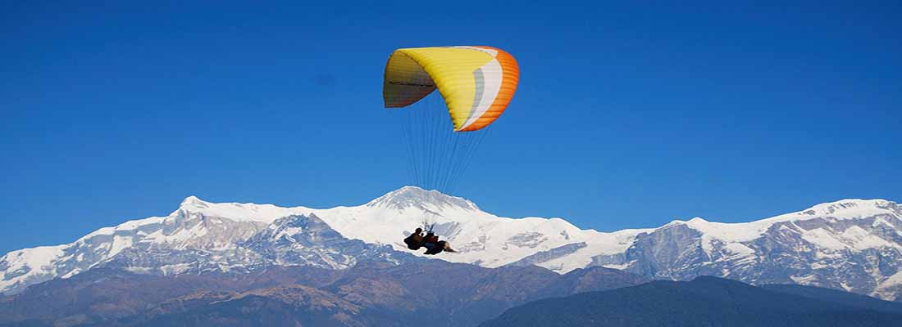

POKHARA
Pokhara is Nepal's number 1 adventure and leisure destination, a gateway to treks in the Annapurna region with plenty of entertainment for individual travellers and their families. In Pokhara you can experience the excitement of adventure: boating, hiking, pony rides, paragliding or simply relax at one of the lakes with stunning views of the Annapurnas. Relax at the shores of Fewa lake in Pokhara Pokhara will overwhelm you with its natural beauty providing you great photo ops. Walk along the shores of the Fewa lake enjoying the greenery surrounding you and a spectacular panoramic view of the high Himalayan peaks of the Annapurna Massif that reflect in the lake. Colorful wooden boats add color and paragliders come floating down from above. Flying and rowing over the lake is probably going to be one of the highlights of your travel experience in Nepal. Boating on the Fewa lake in Pokhara Trekking in the Annapurna from Pokhara Pokhara is well-known as a starting point for various trekking trail and expeditions in the Annapurna . Most of the hikers and trekkers for Annapurna and Ghandruk, respectively, build Pokhara as their first stop, or as relaxing station before they head out for serious walking. So, one may enjoy boating and reading books observing the serenity of nature, or enjoy a couple of drinks, either in local restaurants or at a blues bar, or one may simply enjoy sightseeing or cycling around the valley. Amazing views of the Annapurna's in Pokhara There are plenty of souvenir shops in the market section of the city. Pokhara produces some of the finest handicrafts in the country. There are many activities to engage in around the city; a short hike to Sarangkot is highly recommended, with magnificent views of astounding sunsets, sunrise, and of the whole city beneath. Davis Waterfall, a sublime waterfall in the city is another excursion not to be missed. Peace Stupa & Fewa Lake in Pokhara Pokhara has also developed as an adventure destination in the last decade, offering everything from ultralight flights to paragliding, and from skydiving and ziplining to bungee jumping, Pokhara is a complete holiday package for a perfect vacation.